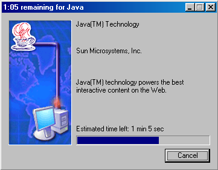
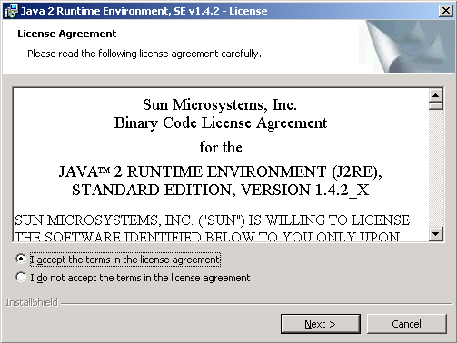
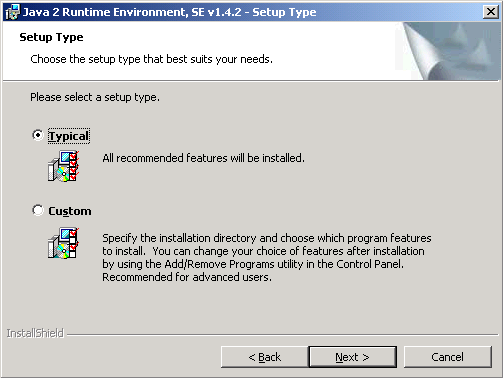
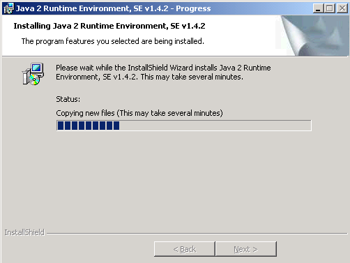
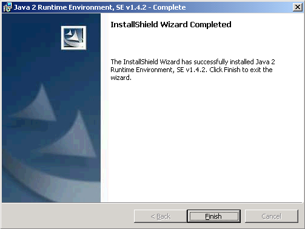
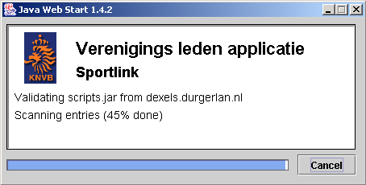

Met Sportlink Club beschikt u over de modernste oplossing voor de ledenadministratie van uw vereniging. Dit houdt in dat computerprogramma's - inclusief nieuwe updates - en gegevens voortaan via internet beschikbaar zijn voor gebruik op uw computer. Zo blijft u altijd en volledig automatisch up-to-date! De technologie die dit allemaal mogelijk maakt heet 'Java'. En om te zorgen dat Java en uw computer elkaar begrijpen is het nodig dat u 'Java Web Start' eenmalig installeert op uw computer. Java is een volstrekt veilige oplossing, waarmee u vervolgens het Sportlink Club programma via internet kunt downloaden. Java is bovendien behulpzaam bij de uitwisseling van ledeninformatie tussen uw vereniging en de sportbond.
Voor het succesvol draaien van programma's via Java Web Start gelden de volgende eisen:
Java programma's - zoals Sportlink Club - werken het best op een systeem met een Pentium II processor (300+ Mhz) en met 64+ Mb intern geheugen.
Java Web Start werkt voor alle Java-gebaseerde programma's. Het kan dus zijn dat u Java al geïnstalleerd heeft voor een andere toepassing. Dit kunt u eenvoudig controleren door verbinding te maken met internet en naar de Sportlink Club download pagina te gaan. U klikt hiervoor op onderstaande link:
http://www.sport-link.com/knvb/club/download.html
Wanneer uw computer beschikt over Java Web Start, dan ziet u het icoon van de Sportlink Club applicatie. Het is dan overigens aan te bevelen om te controleren of u beschikt over de laatste versie. De goede werking van Sportlink Club wordt gegarandeerd door gebruik te maken van de laatste versie van Java Web Start. U controleert uw versie door naar de Java Web Start pagina te gaan op:
http://www.java.com/en/download/windows_automatic.jsp
Klik op deze pagina op de button 'get it now' en binnen enkele seconden beschikt u over de laatste versie van Java Web Start.
Wanneer u geen Sportlink Club icoon ziet op de download pagina van Sportlink, moet u eerst Java Web Start installeren. Dit gebeurt geheel automatisch door middel van een 'wizard' die u door de procedure leidt. Hieronder staat stap voor stap beschreven hoe de installatieprocedure verloopt.
Afhankelijk van de instellingen op uw systeem zullen er tijdens de installatie boodschappen verschijnben waarin toestemming wordt gevraagd om verder te gaan. U kunt deze boodschappen altijd bevestigend beantwoorden. In de meeste gevallen herkent u deze boodschappen aan het kopje 'Security Warning'.
Klik op http://www.java.com/en/download/windows_automatic.jsp en kies de 'get it now' button. Uw computer begint dan met het downloaden van de installatie wizard. Afhankelijk van de snelheid van uw internetverbinding ziet u daarbij de volgende boodschap:

De wizard start automatisch nadat deze boodschap is verdwenen of het downloaden is voltooid. Na een introductiepagina ziet u het volgende scherm:

Kies voor het accepteren van de licentie-overeenkomst (het gebruik van Java Web Start is kosteloos) en klik op 'Next'.

De wizard laat vervolgens een scherm zien waarop u het type installatie kunt kiezen ('Setup Type'). Kies hier de standaard installatie die reeds is geselecteerd; de 'Typical Setup' en klik op 'Next'. De installatie begint nu, hetgeen enkele minuten kan duren. Ga accoord met eventuele veiligheidswaarschuwingen.

Nadat de installatie is afgerond verschijnt het laatste scherm van de wizard.

Klik op 'Finish' en start indien dit gevraagd wordt u computer opnieuw op. U hebt de Java Web Start omgeving geïnstalleerd en uw computer gereed gemaakt voor gebruik van moderne, Java gebaseerde internettoepassingen zoals Sportlink Club!
Na Java Web Start is geïnstalleerd kunnen we de Sportlink Club software downloaden op uw computer. We gaan daarvoor nogmaals naar de download pagina op de sportlink website. Klik hiervoor op:
http://www.sport-link.com/knvb/club/download.html
Na de correcte installatie van Java ziet u nu een icoontje van de Sportlink Club software. Wanneer u dit icoon aanklikt start de download van het Sportlink Club programma naar uw computersysteem. Op uw systeem verschijnt het volgende scherm:

Op dit scherm kunt u het verloop van de download en installatie van het Sportlink Club programma volgen. Dit verloopt volledig automatisch, u hoeft niets te doen! Na de installatie vraagt Java nog of u het software programma vanaf uw bureaublad of 'desktop' wilt kunnen opstarten door een button te plaatsen. Kies hier voor 'Yes'.
Hierna start het programma automatisch en verschijnt het inlog scherm. Wanneer u Sportlink Club gebruikt op advies van uw bond, dan heeft u een brief ontvangen waarin het password en username staan. Met deze inloggegevens kunt u niet alleen aan de slag met de Sportlink Club ledenadministratie, maar ook gegevens uitwisselen met de sportbond.
De installatie van Java Web Start en Sportlink Club is nu voltooid. Een beschrijving van de werking van het programma vindt u onder de menu-uptie 'help' of via de Sportlink website u kunt hiervoor ook klikken op:
http://www.sport-link.com/knvb/club/help.html